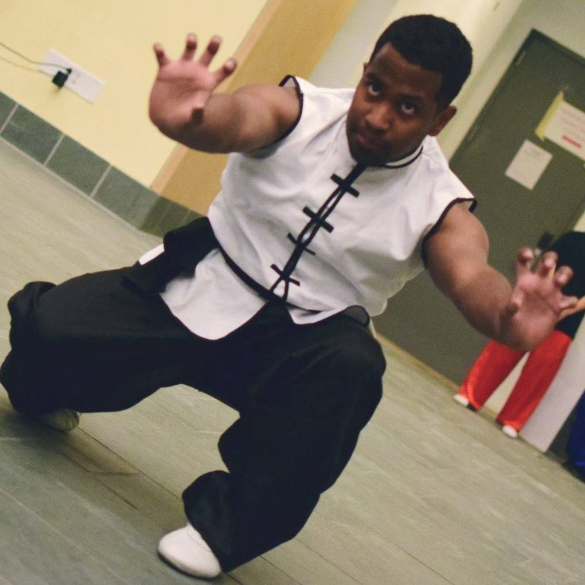

Hi! I'm Andrew. I enjoy wushu, doing hand-drawn animation(onion-skinning, mostly), and playing around with dataa>!
I also have an interest in learning to code, getting better at coding and computer science, and eventually becoming a software engineer. (I can dream, right?)